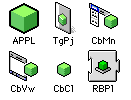
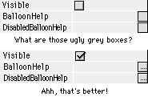
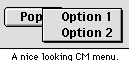

| DR2 to ship in less than 30 days! |
In DR2r70, REAL Software added a new serial number system to RB. This means that when you launch RB, the famous "This program will expire in 30 days" dialog appears. What's interesting though, is that there's no way to enter a code (1.x codes won't work any more). What's more interesting is that Geoff, a member of the RB team, has said that this won't be a problem, because DR2 will ship before that time limit runs out. Let the countdown begin...
| DR2 Pricing Revealed |
With Version 2 nearing release, many people have asked what the price will be. Recently, these questions have been answered. So, for those who want to know what they'll hae to pay, I've included a handy chart. Professional versions are the same as Standard, but include Databases, and a Windows compiler. Academic is the same as Regular, but you can't sell any applications made with it for profit, and must be either under 18, or prove that you are a student.
| Basic Products | ||
| Standard | $99.95 | |
| Standard (Academic) | $59.55 (40% savings) | |
| Professional | $299.95 | |
| Professional (Academic) | $179.95 (40% savings) | |
| Upgrades | ||
| Standard 1.0 | to Standard 2.0 | $49.95 |
| Standard 1.0 | to Professional 2.0 | $149.95 |
| Academic 1.0 | to Academic Standard 2.0 | $29.95 |
| Academic 1.0 | to Academic Pro 2.0 | $89.95 |
| Standard 2.0 | to Professional 2.0 | $199.95 |
| Academic Standard 2.0 | to Academic Pro 2.0 | $119.95 |
| Academic Standard 2.0 | to Standard 2.0 | $39.95 |
| Academic Pro 2.0 | to Professional 2.0 | $119.95 |
| DR2 CD submissions |
REAL Software is now accepting submissions for the version 2 developer's CD. If you have a product or class that you feel should be on the CD, send a letter to Jason Parsely (jason@realsoftware.com), and tell him what the product is. Be sure to include the file as an attachment as well. All submissions must be emailed in by April 2.
| New Icons |
 Anyone who downloaded DR2r71 was probably shocked to see that RB now has a new set of icons (new version, new icon. Makes sense, huh?). I personally think that they're ugly, but then again, I'm not exactly known for my constant agreement with REAL SW's descisions!
Other icons (see the picture to the left) have also been changed in accordance with the new single-green-cube look. And, in a move that will be appreciated by many 1.x fans, DR2r71 sports a new creator code to distinguish itself form 1.0.
| RB-DR mailing list archive |
The RB-DR list is the mailing list for people using DR2. It's similar to the RB-NUG (which is for version 1.x), but its name makes more sense, and it's newer. Until now, it hasn't had an archive like the NUG has, but Doug Holten has changed that with his RB-DR archive page.
| Z arrives! |
For any of you who are intersted in communicating and getting info from an AppleTalk network will be interested in a new plugin called Z. Z is currently in beta, but it's getting better fast. It's OT compatible, and can do other nifty stunts like getting the current time zone, get a list of network zones and the devices in them, and will eventually do other things, such as mounting remote volumes.
Z, which is written by Chris Daley, is free and available from Chris Daley's site, as well as the REALbasic Café.
| Improved String Comparisons |
In DR2r66, REAL SW claimed that regular "=" comparisons are 41 times faster, that StrComp 1 was an impressive 11 times faster, and that StrComp 0 was 16% faster. So, as I do with most extravagant claims, I tested it. Here are the results on my PowerBook 3400c. All times are in milliseconds. Times will vary from machine to machine.
| Comparison | DR2r25 | DR2r69 | Improvement (%) |
| a=b | 5398.021 | 25.625 | 20965% (210x) |
| StrComp(a,b,0) | 22.141 | 23.05 | -3.9% |
| StrComp(a,b,1) | 158.35* | 34.41 | 360—7746% (3.6—77.5x) |
* It should be noted that in r25, comparing equal-length strings with different capitalization (ie, "Dan" and "DaN") makes StrComp 1 took around 2700 milliseconds.
So, surprisingly enough, in all cases but StrComp 0 (which has barely changed), the improvments were understated. I don't know about you, but any time a company wants to add in a 21000 percent speed boost, it's fine with me! =)
Also of note is the new StrComp mode 2, which works like the old StrComp did (ie, it compares until the end of one of the two strings).
| A nifty little Elipsis… |
 In DR2r69, many people noticed mysterious little gray boxes at the end of string properties in the properties window. All that was said is that they were part of an unimplemented feature.
Then, in r70, they were turned into a button with an elipsis on it. When clicked, this button lets you type/paste a multiple-line value into a text property from the code editor–a very valuable tool. However, you don't need r70 to do this. Check out the tips section for more info...
| Better Contextual menus |
 The Contextual menu control is the only way to make a menu appear out of nowhere. However, if you used this control with Mac OS 8 or later, it always had a "Help" item, and a seperator at the top. After all, all real contextual menus have this. However, most people don't use this control for that purpose. So, in r65, a "UseCMM" boolean property was added. If this is true, then the help item appears. If its false, it doesn't. Simple enough.
| New Movie Features |
Recently, some new features have been added to the EditableMovie class which allow developers to systematically step through each frame, and retrieve the picture. The Picture property of an EditableMovie retrieves the picture from the current position, and the Poster property returns the poster frame. This makes movie editing possible.
Unfortunately, there is no way to put a picture in to a movie, so you'll be stuck with creating a new movie. It's not a good method, but at least it works! Although it works for some, I've gotten nothing but crashes from these methods, so be sure to save your projects before trying them out.
| My socket knows where you live! |
While sockets are an incredibly useful tool, they lose a lot of that funcionality if you're making a server. One major problem is that it's impossible to find the address of the socket that connected to your's. Finally, after almost a year of complaining, the message got through to REAL SW, and they added a "RemoteAddress" property to the socket control. This property contains the address of the socket that your socket is connected to. Hooray!
| SuperSocketLite 1.0 released |
The final new version of James Milne's popular new socket plugin has been released. SuperSocketLite 1.0 provides improved functionality over RB's built-in sockets in a variety of ways, including improved server functionality and greater stability. One of the biggest advantages over RB's built-in sockets is that it can communicate through UDP (Universal Data Protocal), an alternate to sockets that is used in many programs, including ICQ.
| REALbasic Resources |
The REALbasic resource (http://snafu.mit.edu/~jstetser/rb/index/) is a new web site that provides links to dozens of RB web sites (80 at the time of this writing). As opposed to the RB Web Ring, which also includes links, REALbasic Resource provides them in a yahoo-esque style. There are several basic categories, and they all contain links and more subcategories. This makes it much easier to find what you want.
For those who have an RB web site and wish to add it to the RB Resource's list, there is a link on the page. Also, it provides a list of the most popular sites, the newest sites, and a complete list of all the sites.
| New font in Reference |
The reference window isn't the prettiest window ever, and the large font didn't help. So, in recent versions, this font has been switched to Geneva 10 from Geneva 12. This might not seem like a huge difference, but it really is. The text is now significantly clearer, doesn't overlap itself as much (in tables), and you can see more in one screenful. It still scrolls extremely slow though...
| Tag those Popups! |
The PopupMenu control now sports a new property: RowTag. This array includes a variant for each entry in the popupmenu. For those who don't know, Variants are a type of data that can contain anything. For example, v="Hi" and v=4.3 are both valid statements if v is a variant. What's this property useful for? Simply adding additional data to a popupmenu that you don't want the user to see.
| More # statements to dial! |
The #Pragma statement was the first to let you send messages to RB's compiler. Now, we have three new # statements: #If, #Else, and #End If. These statements work identically to their C counterparts. Most importantly, this lets you force the compiler to skip sections of code by putting #If TargetWin32...#End If. We'll have more on this in a future issue.
| Version Jumps |
| Version | Date | Summary |
| r72 | 4/1 | Bug Fixes |
| r71 | 3/31 | Bug Fixes & Database improvements StrCompare Mode 2 New About Box and Icons |
| r70 | 3/29 | #if statement "..." button in properties window Bug Fixes |
| r69 | 3/24 | Database improvements Bug Fixes |
| r68 | 3/24 | Bug Fixes Text Conversion extended to 11 languages. |
| r67 | 3/23 | Bug Fixes |
| r66 | 3/22 | StrCompare and = are faster Bug Fixes |
| r65 | 3/20 | UseCMM property in ContextualMenus Bug Fixes |
| r64 | 3/19 | Updated On-Line Reference |
| r63 | 3/18 | RemoteAddress property in Sockets! Bug Fixes |
| r62 | 3/16 | Database improvements Bug Fixes |
| r61 | 3/15 | Picture and Poster EditableMovie properties Bug Fixes |
| r60 | 3/11 | Binding and Database improvements RowTag property in PopupMenu |
| r59 | 3/9 | Improved MoviePlayer control Bug Fixes |